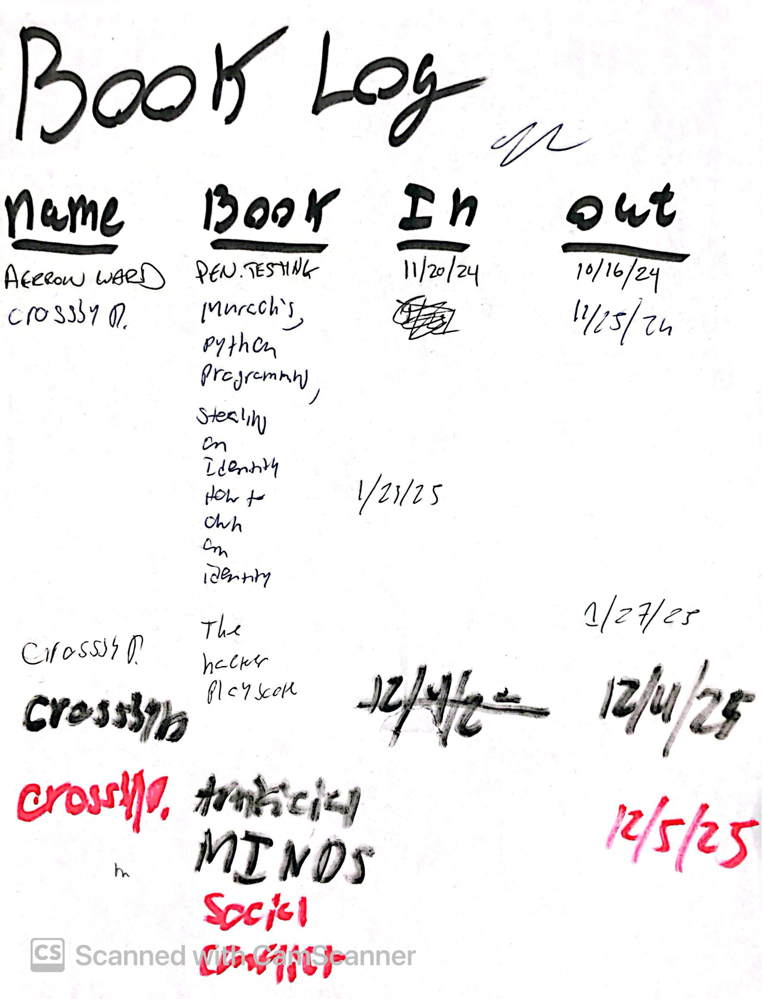

Problem Statement
The library existed, but the system around it was mostly manual.
Borrowing depended on handwritten records, memory, and follow-up. That worked for a small room, but it made availability hard to trust and made the collection harder to manage over time.
- Students had no quick way to check what was available before visiting.
- Admins had to interpret scattered checkout information by hand.
- The in-person flow needed to work with real student IDs, scanners, and touch hardware.

The original paper log became the clearest proof of the problem: useful information existed, but it was not searchable, enforceable, or easy to keep current.